Manual de Usuario
Sistema de Gestión de Mantenimiento Integral - Versión 2.0
1. Introducción
Bienvenido a la plataforma CMMS de Corinfar. Este sistema ha sido diseñado para centralizar la gestión de mantenimiento, garantizando la trazabilidad total de las operaciones y el cumplimiento de normativas de calidad (21 CFR Part 11).
Vista principal del Dashboard con indicadores clave.
2. Acceso al Sistema
Para ingresar al sistema, siga estos sencillos pasos:
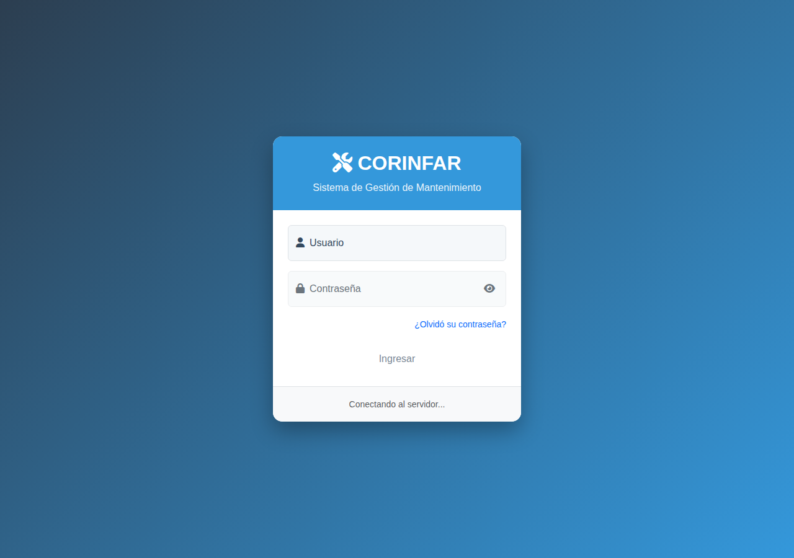
Interfaz de inicio de sesión.
Recuperar Contraseña
Si ha olvidado sus credenciales, puede solicitar un restablecimiento siguiendo estos pasos:
- En la pantalla de inicio de sesión, haga clic en el enlace "¿Olvidó su contraseña?".
- Aparecerá una ventana emergente donde deberá ingresar su Nombre de Usuario.
- Presione el botón "Notificar al Administrador".
Al realizar esta acción, el administrador recibirá una notificación automática y procederá a generar un link seguro de cambio de contraseña que se le hará llegar a la brevedad.
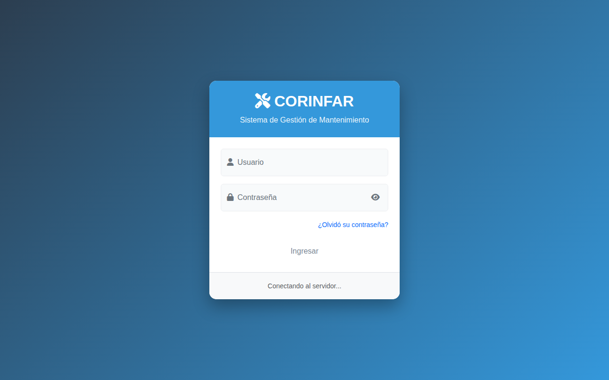
Ventana de solicitud de recuperación de contraseña.
3. Guía para el Operario
Como Operario, su rol es fundamental para reportar fallas y solicitar los recursos necesarios para la producción.
3.1 Cómo realizar una Solicitud de Mantenimiento
Una vez que haya ingresado al sistema, encontrará un menú lateral a la izquierda de su pantalla. Para gestionar sus reportes, haga clic en la pestaña con el nombre "Solicitudes".
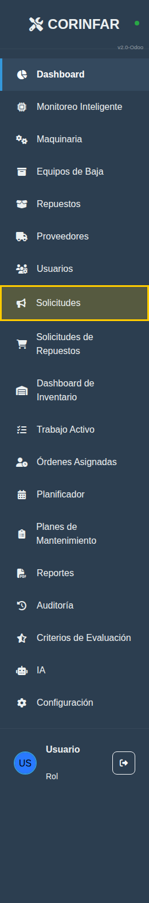
Ubicación del módulo de Solicitudes.
Dentro de esta sección, podrá visualizar el historial de sus reportes y crear nuevos. Para reportar una falla o requerimiento, haga clic en el botón Nueva Solicitud.
Completar el Formulario
Al abrirse el formulario, asegúrese de seleccionar la máquina correcta (puede buscarla por nombre o ID) y detallar de manera clara el problema detectado.
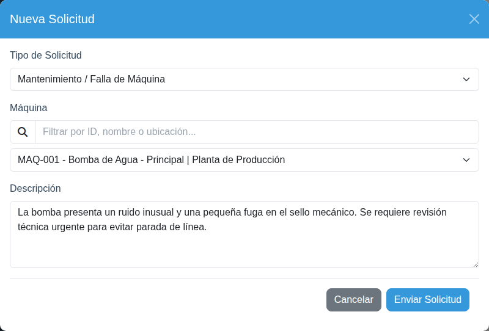
Ejemplo de cómo completar correctamente una solicitud de mantenimiento.
Seguimiento en "Mis Solicitudes"
Una vez enviada, su solicitud aparecerá automáticamente en el listado de Mis Solicitudes. Desde aquí podrá monitorear en tiempo real los cambios de estado hasta que el trabajo sea finalizado.
Estados de una Solicitud:
El sistema le permite ver quién es el Técnico Líder asignado y el avance de la reparación en todo momento.
3.2 Cómo solicitar un Accesorio o Consumible
Seleccione el tipo Insumos / Accesorios. Ahora puede buscar ítems directamente del inventario por nombre o código.
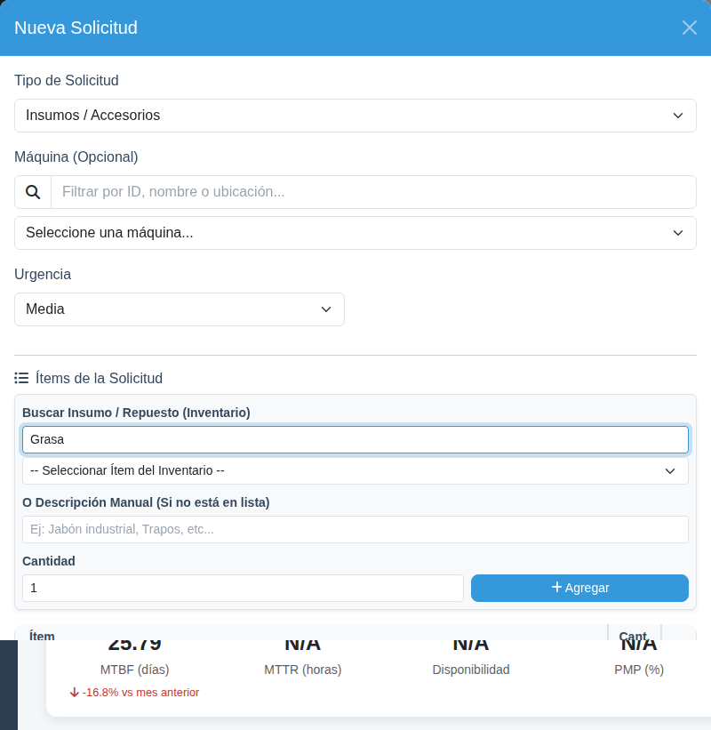
Búsqueda en tiempo real de repuestos e insumos.
3.3 Evaluación del Trabajo Realizado
Cuando un técnico termina una reparación, usted debe confirmar que todo quedó bien usando el botón Evaluar en su lista de solicitudes o desde el tablero de Trabajo Activo. (Vea la sección 3.4 para el detalle paso a paso).
3.4 Módulo de Trabajo Activo
Este módulo es su tablero de control visual. Aquí podrá ver el avance de todos los trabajos que involucran a sus equipos vinculados.
Los 7 Espacios del Tablero (Kanban):
Reportes nuevos que están esperando ser revisados por el departamento de mantenimiento.
Trabajos que ya tienen un técnico asignado y una fecha programada de ejecución.
Tareas en las que el técnico está trabajando físicamente en este momento.
Trabajos detenidos temporalmente por falta de repuestos, espera de terceros o cambio de turno.
¡Importante! El técnico ya terminó, pero el trabajo requiere su validación final.
Historial de trabajos cerrados y aprobados por usted y su jefe de área.
Solicitudes que no procedieron o fueron anuladas por el administrador.
Proceso Detallado de Evaluación
Para asegurar la calidad y el cumplimiento normativo, la evaluación sigue estos pasos obligatorios:
4. Guía para el Supervisor de Área
El Supervisor de Área actúa como el enlace vital entre la producción y el departamento de mantenimiento, gestionando los equipos bajo su cargo y validando la calidad de los trabajos realizados.
4.1 Objetivo y Alcance
Como Supervisor, su responsabilidad principal es asegurar la disponibilidad de la maquinaria asignada a su área y supervisar que el mantenimiento se realice bajo los estándares de calidad de Corinfar.
4.2 Tablero de Control y Planificación
El Supervisor debe utilizar proactivamente el módulo de Trabajo Activo (Kanban) y la pestaña Planificador para gestionar el tiempo de su área.
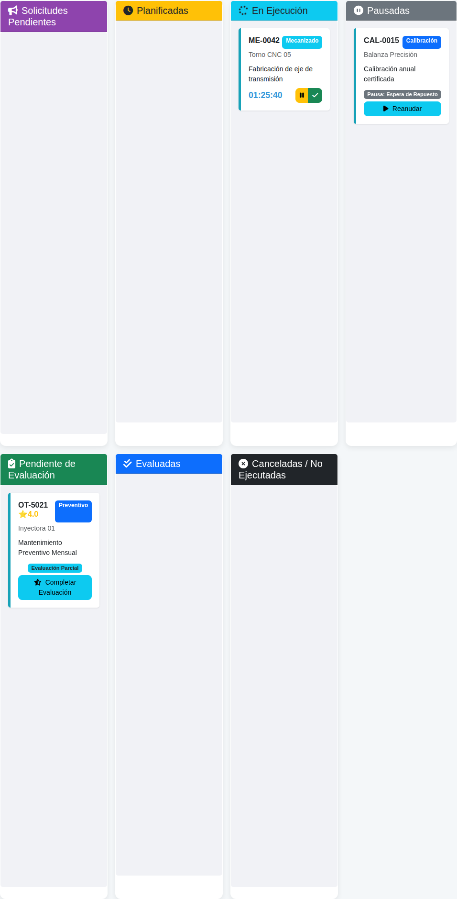
Vista del Tablero Kanban filtrado para el Supervisor con lenguaje de planta.
Estados del Trabajo (Columnas):
- Solicitudes Pendientes: Reportes de falla nuevos realizados por operarios que aún no han sido procesados por el departamento técnico.
- Planificadas: Órdenes de Trabajo (OT) con fecha programada. Aquí verá prefijos como MP (Mantenimiento Preventivo) y SOL para mantenimiento general.
- En Ejecución: Tareas con cronómetro activo. El código puede ser MA (Mantenimiento Activo), ME o MEC (Mecanizado) y CAL (Calibración).
- Pausadas: Trabajos detenidos temporalmente (ej: espera de repuestos o herramientas). Verá el motivo específico de la pausa en la tarjeta.
- Pendiente de Evaluación: El Técnico Líder ha finalizado su labor. ¡Es su turno de actuar para cerrar el ciclo!
Uso del Planificador:
En la pestaña "Planificador", las máquinas muestran el estado de sus planes mediante colores:
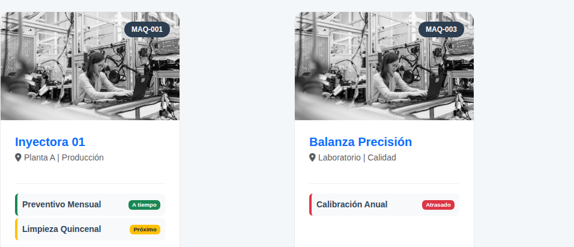
Seguimiento de planes preventivos por equipo en lenguaje de planta.
4.3 Solicitudes de Insumos y Recepción
La trazabilidad de los materiales es crítica. El Supervisor es responsable de confirmar qué recibió físicamente.
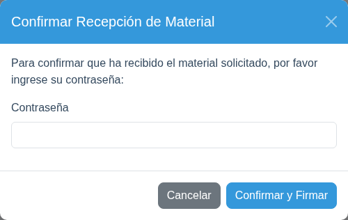
Confirmación de recibo mediante firma electrónica (contraseña de usuario).
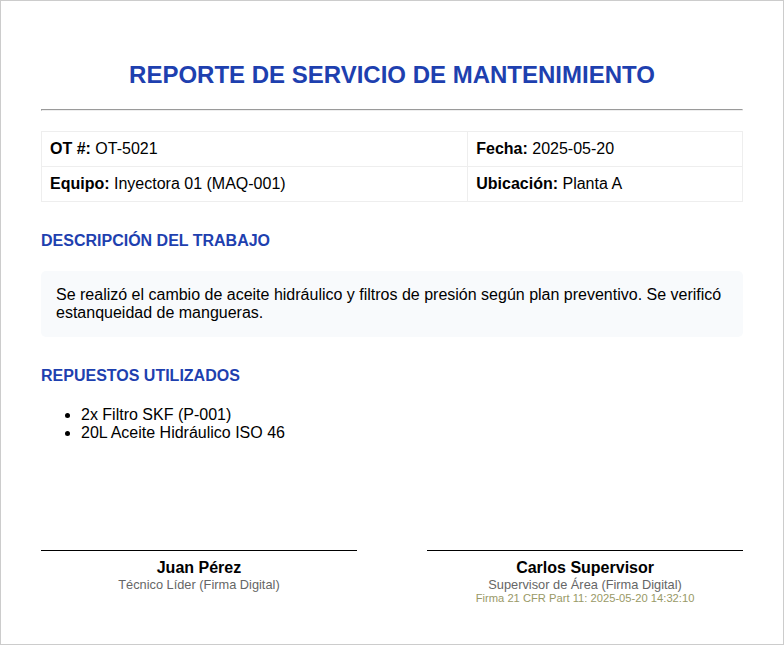
Ejemplo de reporte PDF generado con firmas de los involucrados.
4.4 El Sistema de Doble Evaluación y Estrellas
El sistema utiliza una métrica de 1 a 5 estrellas basada en el cumplimiento de criterios de calidad.
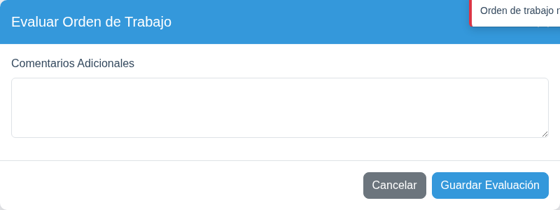
Checklist de evaluación final para el Supervisor.
Lógica de las Estrellas:
- Cada estrella representa un conjunto de criterios cumplidos (Limpieza, Operatividad, etc.).
- Criterios Pareja (50/50): Algunos puntos requieren que tanto el Operario/Jefe como el Supervisor marquen "Cumplido".
Evaluación Parcial:
Si un Jefe de Área o un Operario ya evaluó, pero falta su evaluación, la tarjeta en el Kanban mostrará un estado intermedio.
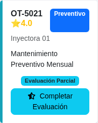
Tarjeta indicando que falta una de las dos evaluaciones obligatorias.
Preventivos (Plan)
Firmas: 1. Jefe de Área + 2. Supervisor.
Correctivos (Solicitud)
Firmas: 1. Operario + 2. Supervisor.
5. Seguridad (21 CFR Part 11)
El sistema cumple con normativas internacionales para asegurar que cada acción sea rastreable y legalmente válida.
Firma Electrónica
Para acciones importantes, como el cierre y evaluación de una solicitud, el sistema le pedirá confirmar su identidad mediante su contraseña de acceso personal.
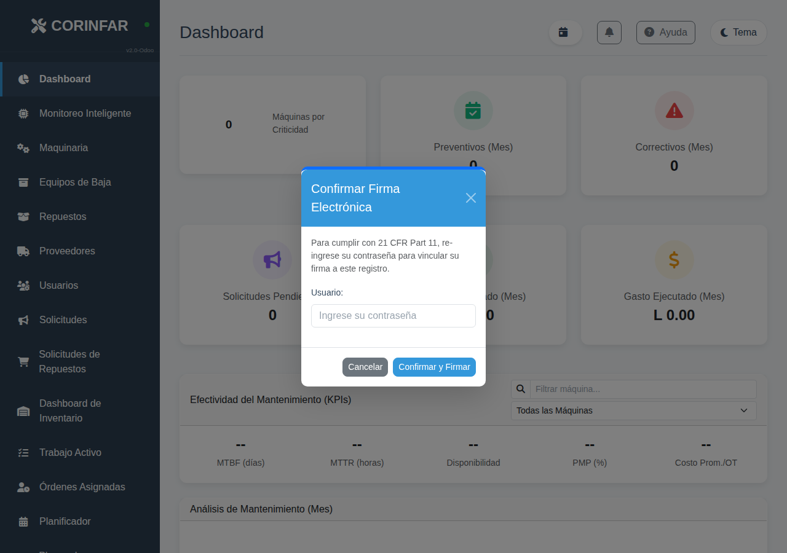
Interfaz de seguridad para cumplimiento de 21 CFR Part 11.
6. Roles y Permisos
| Rol | Identificador | Funciones Principales |
|---|---|---|
| Admin | Administrador | Control total, gestión de usuarios y auditoría profunda. |
| Técnico | Mantenimiento | Ejecución de OTs, registro de repuestos y tiempos. |
| Supervisor de Área | Supervisor Planta | Gestión de equipos asignados, solicitudes de insumos con recepción digital y evaluación final de trabajos (Doble Firma). |
| Operario | Usuario Planta | Reporte de fallas, solicitudes de insumos, monitoreo de trabajos activos y evaluación de servicio. |
7. Órdenes de Trabajo (OT)
Las Órdenes de Trabajo (OT) son el documento digital donde se registra cada minuto invertido, cada repuesto utilizado y las observaciones del Técnico Líder.
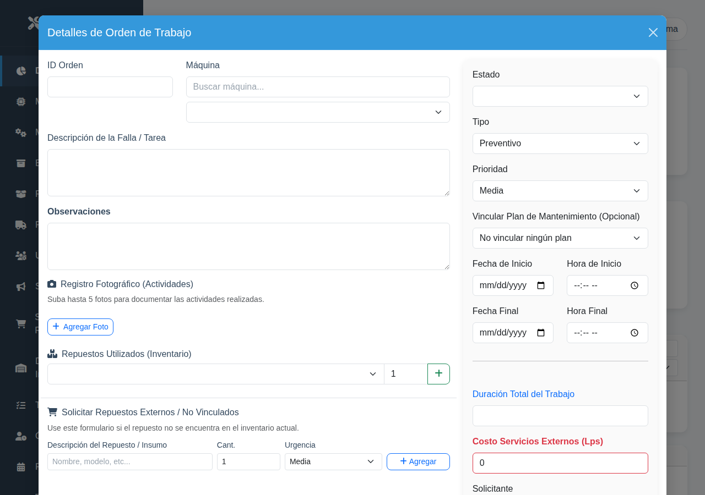
Formulario detallado de una Orden de Trabajo con lenguaje de planta.
8. Dashboard y KPIs
El Dashboard ofrece métricas en tiempo real como MTBF, MTTR y Disponibilidad.
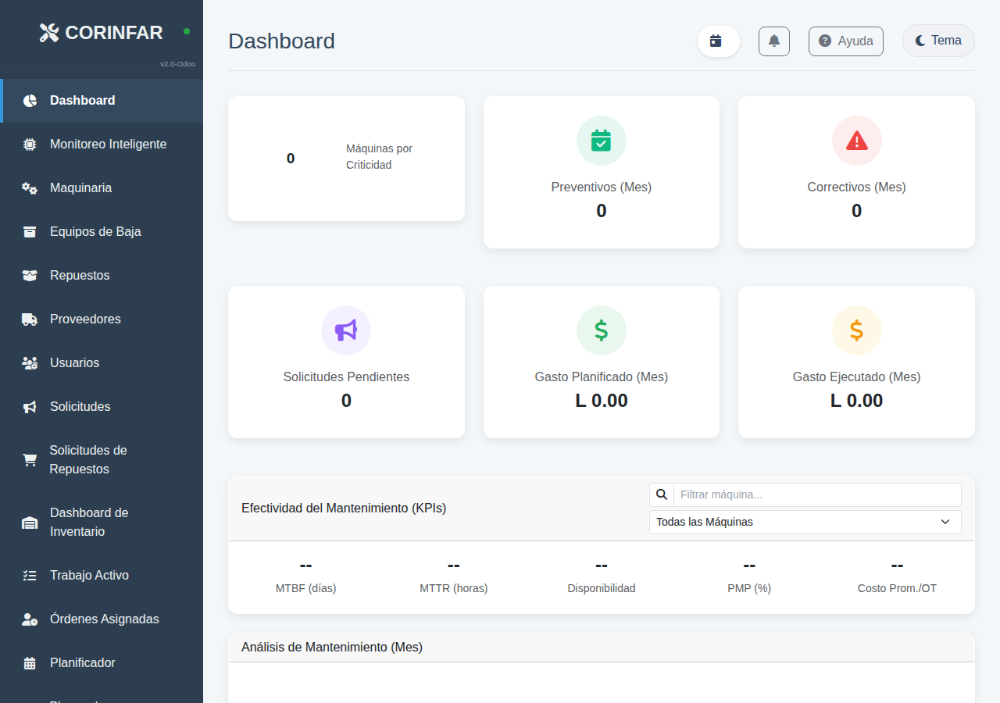
Dashboard en modo oscuro con indicadores de rendimiento.
9. Integración con Odoo
El CMMS sincroniza el inventario y los costos directamente con Odoo ERP.
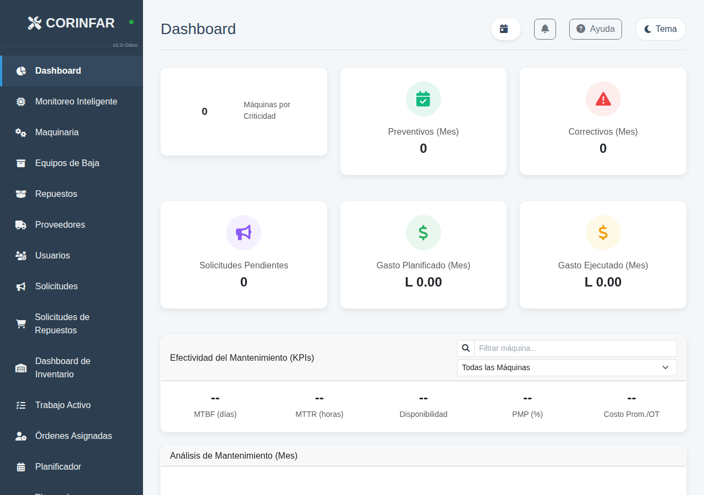
Panel de configuración de la sincronización ERP.
10. Diseño Móvil (Responsive)
La aplicación está optimizada para su uso en tablets y celulares en planta.
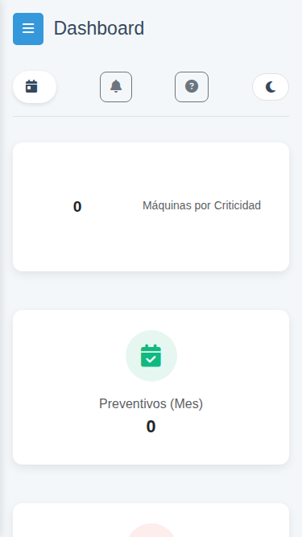
Interfaz móvil.
11. Consejos para Usuarios Nuevos
- Búsqueda: Use los cuadros de búsqueda para encontrar máquinas o repuestos rápidamente.
- Cierre de Sesión: Siempre cierre su sesión por seguridad al terminar.
12. Guía Visual Detallada: Solicitudes
Mis Solicitudes
Vea el listado de sus reportes y su estado actual en tiempo real.
Detalle de la Solicitud
Antes de enviar, puede revisar la lista de ítems agregados y corregir cantidades.